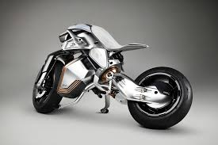
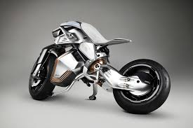

Find Your favorite MotorCycle
All about Motocyle search for your favorite one.
 

Although, there is no standard classification of motorcycles, here are the types of motorcycles i found most popular:
- Standard/Naked/Roadster bikes
- Cruiser bikes
- Touring bikes
- Sport bikes
- Off-Road bikes
- Dual-PurposeOn-Off Road/Adventure Bikes
- ScooterMoped Bikes
Below are Few types of Most Popular motorcycles and How they are Rode:
Cruiser Bikes
Cruiser bikes have a riding position that places the feet forward and hands are up relatively high. This means the riders spine leans back slightly. They are comfortable for short distances but riding for long periods at highway speeds can btaxing on the body. They are located along American coastline.
Dual-Purpose Bikes
Dual purpose (adventure or on-off road ) bikes have touring capability on and off-road. They are often higher than street bikers, with a high centre of gravity and tall seat height, allowing good suspension travel for rough road They are located mostly on 1. KTM 690 Enduro R · 2. Husqvarna FE501S · 3. Honda CRF300L Rally · 4. Honda CRF450L.
Scooters
Scooters usually have a smaller engine than other motorcycles and have all-encompassing bodywork and more built in storage. Modern scooters have automatic clutches and CVT, making them easier to learn on and ride. They are located mostly on in Thailand and Singapore.